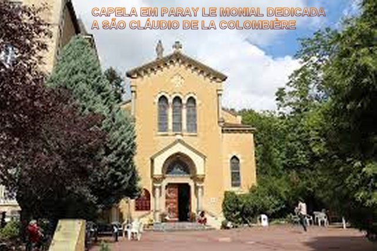
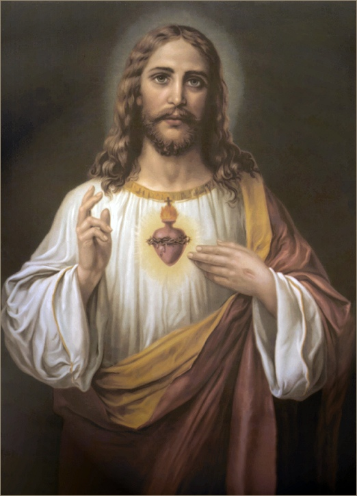
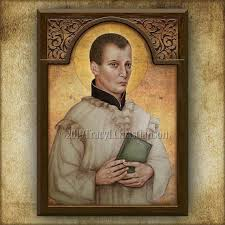
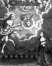

“FIEL AMIGO E SERVO DO SENHOR”
EM PARAY LE MONIAL 
Madre Saumaise se lembrava bem do espírito pesquisador do Padre Cláudio, e por isso, tinha esperanças de que verdadeiramente ele pudesse ajudá-la naquelas Confissões da Irmã. Logo em sua primeira preleção às Monjas do Convento, Padre Claudio notou uma Irmã que o ouvia mais atentamente. Então, posteriormente perguntou a Superiora, que logo lhe informou ser a Irmã Margarida Maria. Com sua experiência, comentou o jesuíta: “É uma alma visitada pela graça”. Nesta mesma ocasião, ao mesmo tempo, uma voz interior (que era a voz de JESUS) falou no coração da Irmã Margarida: “Eis ai aquele que lhe envio”.
Como os “Santos” geralmente falam a mesma linguagem, o Padre Colombière e a Irmã Margarida Maria logo começaram a se entender desde o início. Então a Madre de Saumaise falou claramente com a Irmã: “Abra ao sacerdote totalmente o seu coração em toda profundidade”. A Irmã obedeceu e o Padre Claudio, homem religioso, experiente e culto, pode realizar a pesquisa da alma da Irmã Margarida.
MISSÃO DE ESCLARECER A DEVOÇÃO

Padre Cláudio analisou com frieza todos os depoimentos da Irmã e com bastante clareza e realidade, logo viu a Mão de DEUS nas visões dela, e assim, com a necessária urgência e sabedoria, tranquilizou a Irmã Margarida, encorajando-a na certeza de que realmente aconteciam as Aparições, e primordialmente, que haviam as mensagens de JESUS e eram claras, bonitas e admiráveis. Assim, com palavras claras e elucidativas, Padre Claudio explicou-lhe os diversos aspectos das mensagens, dando-lhe a necessária tranquilidade espiritual e a fervorosa confiança nas Aparições de NOSSO SENHOR.
O SENHOR ENVIOU PRECIOSAS GRAÇAS AO PADRE
Por sua habilidade e clareza mental, ajudando a modesta Irmã Margarida Maria de Alacoque na divulgação da verdadeira Devoção ao SAGRADO CORAÇÃO DE JESUS, NOSSO SENHOR, através da Irmã, enviou ao Padre Cláudio muitos recados e preciosos favores. E por outro lado, como resultado precioso, a partir da intervenção do Padre Cláudio, a Devoção ao SAGRADO CORAÇÃO DE JESUS, deixou de ser perseguida, passando a ser considerada como uma das maiores e a mais importante devoção de toda cristandade.
UMA DAS MUITAS
GRAÇAS ENVIADAS
Certo dia, durante a celebração de uma Santa Missa no Mosteiro, no momento da Comunhão Eucarística, a religiosa viu o SAGRADO CORAÇÃO DE JESUS como uma fornalha incandescente e dois outros corações abismando-se NELE: o coração do Padre Cláudio e o coração dela, da Irmã Margarida Maria, enquanto ela mesma ouvia essas palavras: “É assim que o MEU PURO AMOR une esses TRÊS CORAÇÕES para sempre”. “Esta União destina-se à glória do “MEU SAGRADO CORAÇÃO”. “Quero que descubras seus tesouros, ele lhe proporcionará conhecer o seu valor e sua utilidade”. “Para tanto, sejam vocês dois como irmão e irmã, partilhando igualmente dos bens espirituais”.
UMA PALAVRA SINCERA
A Irmã Margarida Maria alegre e feliz, apressou-se a transmitir ao Padre, as palavras de JESUS mencionadas acima, que se referiam a pessoa dele, do Padre Cláudio. Depois sozinha a Irmã relembrou como o Padre recebeu aquelas palavras de JESUS: “As revelações de humildade e os atos e ações de graças com que ele recebeu essa comunicação de NOSSO SENHOR, assim como várias outras coisas que lhe transmiti da parte de MEU SOBERANO SENHOR, e que lhe diziam respeito, me comoveram e foram para mim mais proveitosas que todos os sermões e homilias que eu poderia ouvir”. A Irmã exaltava a modéstia e a imensa simplicidade do coração do Padre Cláudio.
O TERRÍVEL JANSENISMO
Verdadeiramente o Padre Cláudio agiu com plena e total sabedoria, desde as suas homilias nas Santas Missas, nas reuniões com as irmandades ou falando diretamente ao povo, sempre explicando minuciosamente o significado e ao mesmo tempo que exaltando a “Magnífica Obra Amorosa e Redentora” do FILHO DE DEUS, redimindo e salvando a humanidade de todas as gerações, e inclusive, deixando preciosos meios através dos Sacramentos, dos ensinamentos registrados nas Sagradas Escrituras, além de evidenciar o valor infinito do precioso e Sagrado Sangue Divino derramado no sacrifício da Cruz, lavando a Alma de todos nós. Com inteligência e dignidade, Padre Cláudio, evidenciou a grandeza da Impressionante Obra Redentora realizada por JESUS,rechaçando com energia aquela abominável enxurrada de podridão contra a Sagrada Eucaristia e a Mãe de JESUS, que hereges e homens com espírito leproso espalhavam por todos os lados. Era a heresia do Jansenismo nascida na França e terrivelmente divulgada em toda Europa, causando um grande mal a todas as pessoas: aos consagrados, aos religiosos e aos fiéis em geral. E o pior, disseminavam uma abominável e mentirosa teoria, afirmando que não tinha nenhum valor a Sagrada Eucaristia e a veneração dedicada a NOSSA SENHORA! Somando a estas abomináveis acusações, havia outras terríveis e maldosas, objetivando destruir o espírito de santidade, que é admiravelmente cultivado no coração de todos que verdadeiramente amam a DEUS e a NOSSA MÃE SANTÍSSIMA. Mas o Padre Cláudio atuou firme e de modo incansável, reafirmando e testemunhando com ênfase a necessária devoção a SANTÍSSIMA VIRGEM MARIA e a imprescindível e “necessariamente fervorosa devoção” ao SANTÍSSIMO SACRAMENTO, que verdadeiramente é a presença inquestionável e amorosa de nosso querido e amado DEUS. Desse modo, o Padre Cláudio conseguiu trazer de volta ao cristianismo fiel, muitas pessoas que como ovelhas desgarradas, haviam se afastado da religião, acreditando naquelas barbaridades, baboseiras e maluquices. E como testemunho da sua admirável ação, fundou a Congregação Mariana para jovens e adultos, para homens e para mulheres, e reorganizou os alunos do Colégio Jesuíta. Venceu todos os tipos de dificuldades, para organizar o Hospital Geral que atendia ao povo, e também aos peregrinos e aos indigentes; a seguir, corajosamente se deslocou pregando missões nos povoados vizinhos, levando o Amor de DEUS e o verdadeiro carinho de NOSSA SENHORA a todos aqueles que necessitavam e buscavam a preciosa e eficaz intercessão da MÃE SANTÍSSIMA junto ao NOSSO DEUS e SENHOR, colhendo admiráveis frutos de compreensão, de arrependimento e com mais fervor espiritual.

Primordialmente, o Padre Cláudio de La Colombière mostrou a santidade que existia em seu coração, seguindo corretamente e de modo fervoroso o desígnio de NOSSO SENHOR JESUS CRISTO, na revelação magnífica e especial feita em 1675, quando juntos, o Padre Cláudio, a Irmã Margarida e alguns membros da Comunidade da Visitação, rezavam na Igreja diante do SANTÍSSIMO SACRAMENTO exposto. Era um dia da Oitava de CORPUS CHRISTI em 1675, e NOSSO SENHOR disse a Irmã Margarida Maria Alacoque: “Eis o CORAÇÃO que tanto amou os homens, que não poupou nada até SE esgotar e SE consumir, para lhes manifestar o SEU AMOR. E como reconhecimento, EU não recebo da maior parte deles senão ingratidão, desprezos irreverências, sacrilégios, friezas que têm para COMIGO neste Sacramento de Amor. E é ainda mais repugnante, porque são corações a MIM Consagrados”.
UMA FESTA ESPECIAL
Em seguida, NOSSO SENHOR pediu a Irmã Margarida Maria: “Quero que a Primeira Sexta-Feira após a Oitava de CORPUS CHRISTI fosse consagrada como festa especial para honrar o “MEU CORAÇÃO”, e que fosse realizado um ato público de desagravo, acompanhado de comunhões reparadoras”. E completando, NOSSO SENHOR acrescentou a promessa formal de conceder copiosos favores espirituais para quem praticasse tal devoção, a “Devoção das Nove Primeiras sextas-feiras durante nove meses seguidos” conforme se encontra no PORTAL DO APOSTOLADO DOS SAGRADOS CORAÇÕES, no Site: “A GRANDE PROMESSA DO SAGRADO CORAÇÃO DE JESUS”.
A Irmã Margarida Maria preocupada e não se sentido em condições de poder atender ao pedido de NOSSO SENHOR, alegou a sua indignidade e incapacidade de realizar essa missão tão importante. Naquele mesmo momento JESUS deu-lhe a seguinte resposta: “Dirige ao MEU servo Cláudio e dize-lhe, de MINHA PARTE, que faça todo o possível para estabelecer esta devoção e dar esse prazer ao MEU DIVINO CORAÇÃO; e diga mais, que ele não desanime diante das dificuldades que encontrará, pois estas não faltarão, mas ele deve saber que é todo poderoso e sábio, quem desconfia de si mesmo para confiar unicamente em MIM”.
Assim, diante das palavras incisivas de NOSSO SENHOR a Irmã Margarida, na sexta-feira seguinte, em companhia do Padre Cláudio e de toda a Comunidade da Visitação de Paray-le-Monial, celebraram pela primeira vez a “Festa do SAGRADO CORAÇÃO DE JESUS”, oportunidade em que todos se consagraram inteiramente ao “SAGRADO CORAÇÃO DE NOSSO SENHOR”.
DIA DA CONSAGRAÇÃO

“Afirmamos de modo sincero e verdadeiro que neste ato solene, nos Consagramos ao “SAGRADO CORAÇÃO DE JESUS”. Esta oferenda tem a finalidade específica e especial de honrar e louvar o “DIVINO CORAÇÃO DE NOSSO SENHOR”, que é sede de todas as virtudes e fonte de todas as bênçãos, além de ser o retiro especial para todas as almas santas. Que sejam estas palavras a expressão maior e mais pura de nosso incontido e dedicado amor a “NOSSO SENHOR JESUS CRISTO”:
“Amado e “SAGRADO CORAÇÃO DE JESUS”, sei que por todas as “SUAS BONDADES” este “DIVINO CORAÇÃO” não encontra no coração da maioria das pessoas senão dúvidas, esquecimentos, desprezos, ingratidões. Assim, para reparação de tantos ultrajes e de tão cruéis ingratidões, ó muito adorável “CORAÇÃO DO MEU AMÁVEL JESUS”, e para evitar cair numa semelhante infelicidade, ofereço-VOS o meu coração com todos os movimentos de que é capaz, e dou-me inteiramente a VÓS… Assim, ofereço ao VOSSO “DIVINO CORAÇÃO” todo o mérito, toda a satisfação de todas as minhas Santas Missas, de todas as Orações, todos os Atos de Mortificação, todas as Práticas Religiosas, os Atos de Zelo, de Humildade, de Obediência e todas as outras Virtudes que Praticar até o último momento da minha vida. Não só tudo isto será para honrar o “VOSSO MISERICORDIOSO CORAÇÃO”, mas ainda LHE peço que aceite a doação inteira que LHE faço da Minha Pessoa, e dela podes dispor do modo que LHE agradar e como for de “VOSSA SANTÍSSIMA VONTADE". Amém.